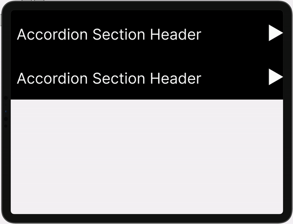
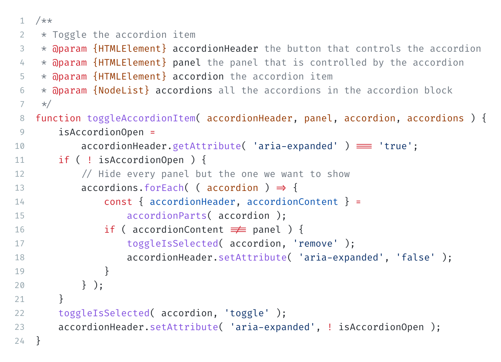
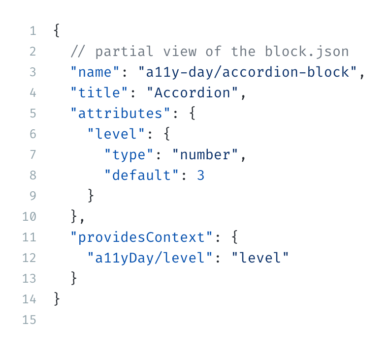
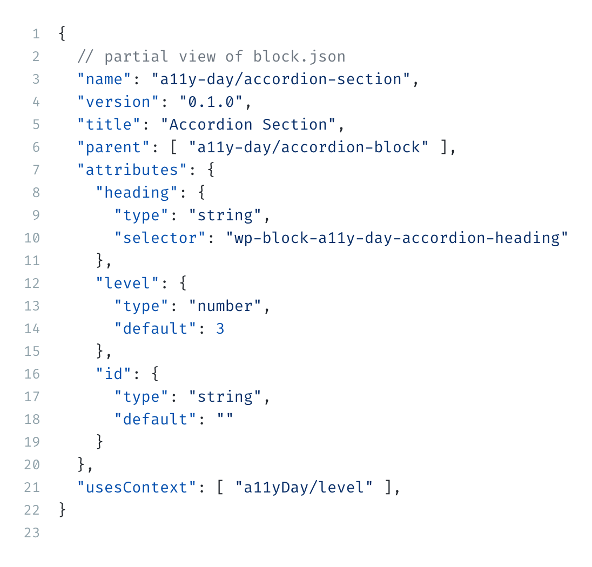
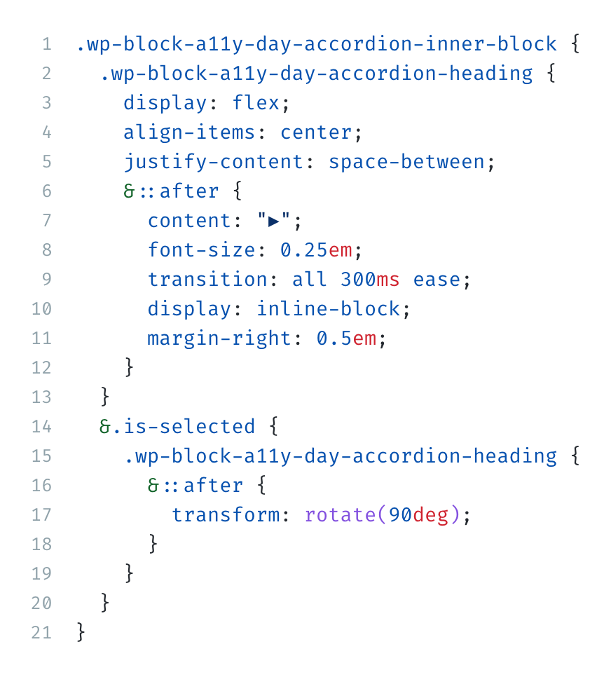

An accordion is a set of collapsible panels that can be used to hide and show content.
Nope! A semantic accordion doesn't exist yet.
I operate independently of any other details element on the page.
There are 4 main criteria for an accessible accordion.
Can you navigate between the accordion sections and their panels with your keyboard?
Can screen readers and other assistive devices navigate and communicate the list of accordion sections available?
Does the accordion function well regardless of screen size?
Does the accordion visually indicate collapsed content and suggest how to collapse expanded content?
<div class="wp-block-a11y-day-accordion-section">
<h2 className="wp-block-a11y-day-accordion-heading">
<button
type="button"
aria-expanded="false"
className="accordion-trigger"
aria-controls="section-1-content"
id="section-1-heading"
>
Accordion Section Header
</button>
</h2>
<div
id="section-1-content"
role="region"
aria-labelledby="section-1-heading"
className="wp-block-a11y-day-accordion-panel"
>
<!-- hidden content lives here -->
</div>
</div>
/**
* Toggle the accordion item
* @param {HTMLElement} accordionHeader the button that controls the accordion
* @param {HTMLElement} panel the panel that is controlled by the accordion
* @param {HTMLElement} accordion the accordion item
* @param {NodeList} accordions all the accordions in the accordion block
*/
function toggleAccordionItem( accordionHeader, panel, accordion, accordions ) {
isAccordionOpen =
accordionHeader.getAttribute( 'aria-expanded' ) === 'true';
if ( ! isAccordionOpen ) {
// Hide every panel but the one we want to show
accordions.forEach( ( accordion ) => {
const { accordionHeader, accordionContent } =
accordionParts( accordion );
if ( accordionContent !== panel ) {
toggleIsSelected( accordion, 'remove' );
accordionHeader.setAttribute( 'aria-expanded', 'false' );
}
} );
}
toggleIsSelected( accordion, 'toggle' );
accordionHeader.setAttribute( 'aria-expanded', ! isAccordionOpen );
}

.wp-block-a11y-day-accordion-heading {
background-color: var(--wp--preset--color--black);
color: var(--wp--preset--color--white);
margin: 0;
button {
background-color: transparent;
border: 0;
border-radius: 0;
width: 100%;
font-size: inherit;
text-align: inherit;
cursor: pointer;
color: var(--wp--preset--color--white);
display: flex;
justify-content: space-between;
align-items: center;
&::after {
content: "▶";
font-size: 0.25em;
transition: all 300ms ease;
display: inline-block;
margin-right: 0.5em;
}
&[aria-expanded="true"] {
&::after {
transform: rotate(90deg);
}
}
}
}
.wp-block-a11y-day-accordion-panel {
padding: calc(var(--wp--style--block-gap) / 2);
display: none;
transition: opacity 0.3s ease-in;
}
.wp-block-a11y-day-accordion-section.is-selected {
> .wp-block-a11y-day-accordion-panel {
display: block;
}
}
{
// partial view of the block.json
"name": "a11y-day/accordion-block",
"title": "Accordion",
"attributes": {
"level": {
"type": "number",
"default": 3
}
},
"providesContext": {
"a11yDay/level": "level"
}
}

{
// partial view of the block.json
"name": "a11y-day/accordion-section",
"title": "Accordion Section",
"parent": [ "a11y-day/accordion-block" ],
"attributes": {
"heading": {
"type": "string",
"selector": "wp-block-a11y-day-accordion-heading"
},
"level": {
"type": "number",
"default": 3
},
"id": {
"type": "string",
"default": ""
}
},
"usesContext": [ "a11yDay/level" ]
}

Listen for the global Add Block keyboard shortcut when the RichText
component is focussed.
Apply the button styles and toggle animation to the heading div
.wp-block-a11y-day-accordion-section {
.wp-block-a11y-day-accordion-heading {
display: flex;
align-items: center;
justify-content: space-between;
&::after {
content: "▶";
font-size: 0.25em;
transition: all 300ms ease;
display: inline-block;
margin-right: 0.5em;
}
}
&.is-selected {
.wp-block-a11y-day-accordion-heading {
&::after {
transform: rotate(90deg);
}
}
}
}

Try out the block yourself:
https://aurooba.com/a11y-day-sandboxView the code:
https://github.com/bacoords/a11y-day-accordion-blockView the slides:
https://bacoords.github.io/a11y-day-accordion-block/presentation.html